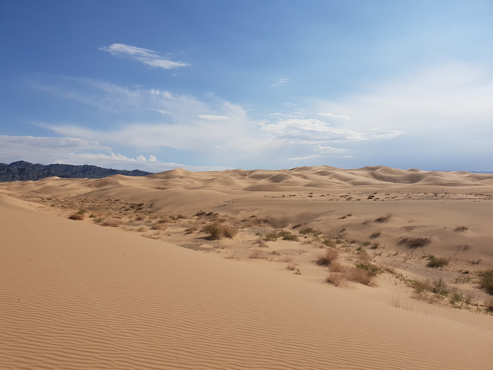
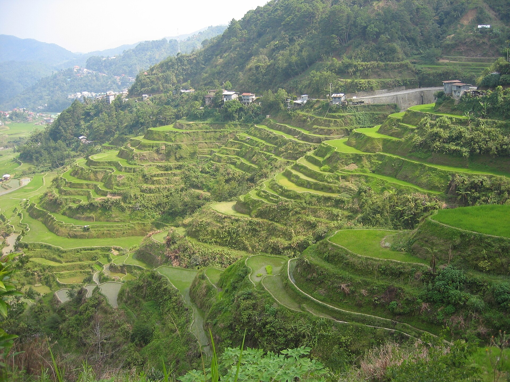
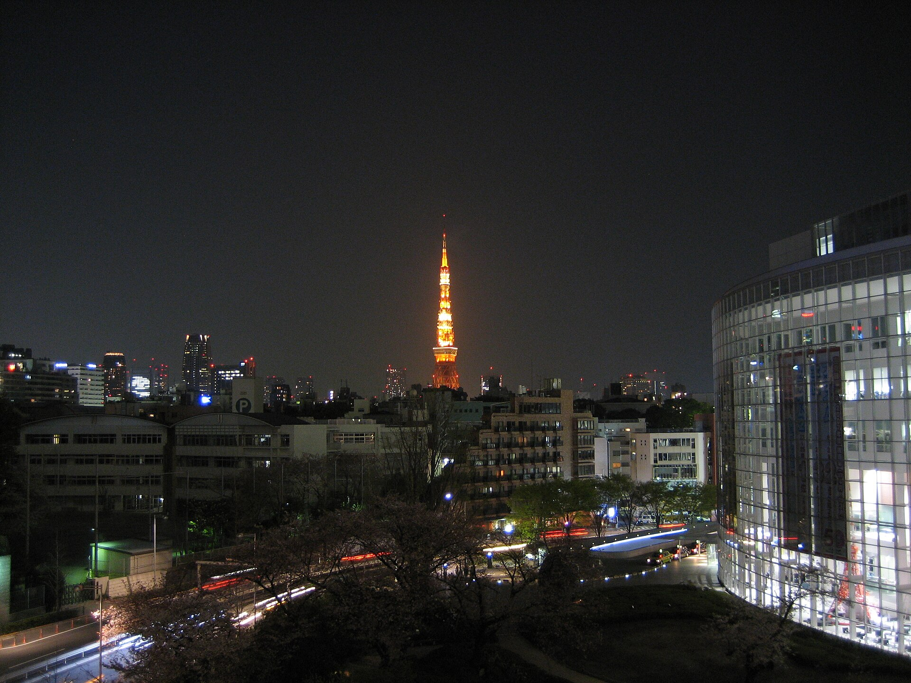

Überblick
Asien ist der größte Kontinent der Erde – nach Fläche und nach Bevölkerungszahl. Übliche Angaben zur Landfläche liegen bei rund 44 bis 45 Millionen Quadratkilometern (je nachdem, welche Inseln und welche Abgrenzung zu Europa einbezogen werden); das entspricht grob einem Drittel der Landoberfläche der Erde. In Asien leben weit mehr als die Hälfte der Weltbevölkerung – Schätzungen für die 2020er Jahre bewegen sich im Bereich von deutlich über 4,5 Milliarden Menschen; präzise Weltanteile hängen von UN-Aggregaten und Kontinentdefinitionen ab und werden hier nur annähernd genannt. Asien reicht vom Nordpolarmeer bis in die Äquatorzone und vom Mittelmeer bzw. von den Ural-Konventionen bis zum Pazifik.
Physisch bildet Asien mit Europa die Landmasse Eurasien; die Grenze ist konventionell (Ural, Kaspisches Meer, Kaukasus/Schwarzmeer, türkische Meerengen). Im Südwesten grenzt Südwestasien an Afrika (Sinai/Suez, Rotes Meer). Asien umfasst extreme Gegensätze: den höchsten Punkt der Erdoberfläche (Mount Everest im Himalaya) und den tiefsten Festlandspunkt (Totes Meer), sibirische Kältepole und tropische Regenwälder, riesige Wüsten und monsunfeuchte Ebenen, dünn besiedelte Taiga und einige der größten Metropolregionen der Welt. Der Begriff „Asien“ fasst Regionen zusammen, die kulturell, sprachlich und politisch kaum einheitlich sind; er ist nützlich als geografischer Rahmen, aber irreführend als Homogenitätsannahme. In der Geografie-Struktur dient dieser Artikel als Kontinent-Einstieg.
Historisch war Asien Ausgangspunkt früher Agrarzentren, Schriftkulturen und Fernhandelsnetze; europäische Expansion und Kolonialismus formten neuzeitliche Grenzen und Wirtschaften mit, ohne die Eigenständigkeit asiatischer Gesellschaften zu löschen. Heute verschiebt sich das globale wirtschaftliche Gewicht erneut Richtung asiatischer Märkte und Produktionsnetzwerke – ein Prozess mit Gewinnern, Verlierern und offenen ökologischen Kosten.
Physische Geografie

Hochasien: Himalaya und Tibet
Das Hochland von Tibet und der Himalaya bilden den orografischen Kern Süd- und Zentralasiens. Der Himalaya entstand durch die Kollision der Indischen mit der Eurasischen Platte und trägt die höchsten Gipfel der Erde; Mount Everest / Sagarmatha / Qomolangma liegt bei rund 8850 m (Messwerte werden periodisch neu bestimmt). Benachbarte Ketten – Karakorum, Hindukusch, Pamir, Tien Shan – erweitern das Hochgebirgssystem. Gletscher und Schneeschmelze speisen große Ströme (Indus, Ganges, Brahmaputra, Jangtse, Mekong u. a.) und machen die Region zu den oft so genannten „Wassertürmen Asiens“. Erdbebenrisiko und Hanginstabilität sind hoch; tektonische Aktivität hält an.
Sibirien, Norden und Binnenasien
Nördlich erstreckt sich Sibirien mit weiten Ebenen, dem Mittelsibirischen Bergland und ausgedehnten Permafrostgebieten bis zum Nordpolarmeer. Die Taiga (borealer Nadelwald) bedeckt riesige Flächen; weiter nördlich folgen Tundra und Polarwüstenklima. Im Westen markieren Ural und Kaspisches Meer den Übergang zu Europa; im Inneren liegen Becken und Wüsten wie die Gobi und zentralasiatische Trockenräume. Der Baikalsee ist einer der tiefsten und ältesten Süßwasserseen der Welt. Flüsse wie Ob, Jenissei, Lena und Amur entwässern gigantische Einzugsgebiete, sind aber jahreszeitlich durch Eis gebunden.
Ost-, Südost- und Südasien
Ostasien verbindet die Große Ebene Chinas, die koreanische Halbinsel und den japanischen Inselbogen – tektonisch aktiv, mit Vulkanen und Erdbeben. Südostasien umfasst Festland (Indochina) und einen der größten Archipelräume der Erde (Indonesien, Philippinen u. a.) am Pazifischen Feuerring. Tropischer Regenwald, aktive Vulkane und korallenreiche Meere prägen viele Inseln; die Wallace-Linie und benachbarte biogeografische Grenzen trennen asiatische und australasiatische Faunenräume. Südasien wird vom Indischen Subkontinent dominiert: Deccan-Plateau, Indus-Ganges-Brahmaputra-Ebenen und Himalaya-Vorland. Monsunregen und Flussüberschwemmungen strukturieren Landwirtschaft und Siedlung.
Südwestasien (Naher Osten) und weitere Großräume
Südwestasien (häufig „Naher Osten“ / Westasien genannt) reicht vom östlichen Mittelmeer und der Arabischen Halbinsel bis zum Iranischen Hochland und Mesopotamien. Trockenheit, Gebirge (Zagros, Taurus) und historisch frühe Agrar- und Stadtkulturen kennzeichnen den Raum; das Tote Meer liegt als Endsee weit unter dem Meeresspiegel. Zentralasien (Steppen, Hochgebirge, Becken) und der Kaukasus bilden weitere Übergangsregionen. Asiens Küstenlinie ist die längste aller Kontinente; Schelfmeere, Inselketten und Meerengen (Malakka, Hormus, Bosporus) sind strategisch und ökologisch bedeutsam.
Bodenschätze und geologische Provinzen sind ebenso vielfältig wie das Relief: Kohle und Erze in China und Sibirien, Zinn- und Kupfergürtel in Südostasien, Kohlenwasserstoffe am Persischen Golf und in Westsibirien, sowie zahlreiche Lagerstätten seltener Metalle. Schwemmlandebenen an den großen Strömen gehören zu den produktivsten Agrarräumen der Welt, sind aber hochwassergefährdet. Deltas wachsen und erodieren zugleich; Grundwasserentnahme und Sedimentrückhalt durch Staudämme verändern Küstenlinien – Prozesse, deren quantitative Bilanz regional unterschiedlich und teils unsicher bleibt. Inselbögen und Subduktionszonen machen den pazifischen Rand zu einer der seismisch aktivsten Zonen der Erde.
Klima

Wegen der enormen Ausdehnung und der Gebirgsbarrieren zeigt Asien die stärksten Klimakontraste aller Kontinente. Kontinentalklima mit großen Jahresschwankungen beherrscht weite Innenräume; arktische Luft kann im Winter weit nach Süden vorstoßen. Sibirien verzeichnet einige der niedrigsten regelmäßig gemessenen Temperaturen bewohnter Orte; zugleich heizen sich Wüsten und Ebenen im Sommer stark auf. Der Sommermonsun Süd- und Ostasiens bringt feuchte Luft vom Indischen und Pazifischen Ozean und entscheidet über Ernten – mit hoher Variabilität von Jahr zu Jahr. Wintermonsun und kontinentale Kältehochdruckgebiete (u. a. sibirisches Hoch) prägen die kalte Jahreszeit.
Tropisches Regenwaldklima herrscht in Teilen Südostasiens und am Äquator; Monsunwälder und Savannenartige Formationen treten in Übergangszonen auf. Wüsten und Halbwüsten erstrecken sich von der Arabischen Halbinsel über Iran und Zentralasien bis zur Gobi. Hochgebirgsklimate erzeugen permanente Schneefelder und Gletscher; das Tibetische Plateau beeinflusst großräumig die Atmosphärenzirkulation. Mediterrane und semiaride Klimate finden sich an Teilen der Westküsten Kleinasiens und der Levante. Taifun-/Taifun- und Zyklonrisiken betreffen Ost- und Südasien; Dürren und Flutkatastrophen sind wiederkehrende Extreme.
IPCC-Regionalbewertungen unterstreichen hohe Verwundbarkeit dicht besiedelter Küsten, Deltas (Ganges–Brahmaputra, Mekong, Jangtse) und gletscherabhängiger Wasserressourcen. Projektionen zu Monsunstärke und Niederschlagsverteilung bleiben regional unsicher; Erwärmung und Meeresspiegelanstieg gelten hingegen als robuste Trends. Luftverschmutzung in Ballungsräumen und Schneeschmelze in Hochasien verbinden lokale Umweltprobleme mit globalem Klimawandel.
Vegetationsgürtel folgen dem Klima von Polar- und Gebirgstundra über Taiga, Steppen und Wüsten bis zu immergrünen Tropenwäldern und Monsunwäldern. Landwirtschaftliche Kalender – Reispflanzung, Weizenernte, Nomadenwanderungen – sind eng an Regen- und Frostgrenzen gekoppelt. Historische Klimaschwankungen (Dürreperioden, Monsunversagen) haben Dynastien und Migrationsbewegungen mitbeeinflusst; moderne Instrumentenmessungen erlauben feinere Trends, ersetzen aber nicht die Einsicht in hohe natürliche Variabilität. Für Enzyklopädiezwecke genügt: Asiens Klima ist nicht „eines“, sondern ein Kontinuum von Extremen, gesteuert durch Größe, Gebirge und Ozeannähe.
Menschen und Regionen

Demografie und Vielfalt
Asien beherbergt die bevölkerungsreichsten Staaten der Welt (u. a. Indien und China – Reihenfolgen können sich mit Zählungen ändern) sowie Stadtregionen mit mehreren zehn Millionen Einwohnern. Zugleich gibt es dünn besiedelte Räume in Sibirien, der Mongolei und Hochasien. Sprachfamilien reichen von sino-tibetisch und indoarisch über turkisch, semitisch, japanisch, koreanisch, austronesisch bis zu hunderten weiterer Gruppen. Religiöse Traditionen umfassen Hinduismus, Buddhismus, Islam, Christentum, Judentum, Daoismus, Shinto und viele lokale Praktiken. „Asiatische Kultur“ im Singular gibt es nicht; gemeinsame Nenner sind eher geografische Nachbarschaft und historische Handelsnetzwerke (Seidenstraßen, Indischer Ozean, pazifische Routen).
Großregionen im Überblick
Ostasien (China, Japan, Korea, Mongolei u. a.) verbindet alte Schriftkulturen, moderne Industrie- und Dienstleistungsökonomien und pazifische Küsten. Südostasien ist archipelisch und festländisch, religiös und ethnisch gemischt, wirtschaftlich dynamisch und tektonisch riskant. Südasien bündelt den Subkontinent mit hoher Bevölkerungsdichte in den Ebenen und komplexen Staatenstrukturen. Zentralasien umfasst Binnenstaaten mit Steppen-, Wüsten- und Gebirgslandschaften und postsowjetischen Prägungen. Nordasien (vor allem sibirisches Russland) ist rohstoffreich und klimatisch extrem. Südwestasien verknüpft Energiewirtschaft, aride Umwelten und geopolitische Konfliktlinien; die Zuordnung zum „Orient“ oder „Naher Osten“ ist kulturgeschichtlich beladen und geografisch unscharf.
Wirtschaft, Städte und Umwelt
Asien vereint Hochtechnologiezentren, Exportindustrien, Agrargroßräume und Pastoralismus. Energie- und Mineralressourcen (Erdöl/Erdgas am Persischen Golf und in Russland/Zentralasien, Kohle, Seltene Erden u. a.) beeinflussen globale Märkte. Rapid urbanization hat Megacitys und neue Mittelstädte entstehen lassen; informelle Siedlungen und Infrastrukturengpässe bleiben Herausforderungen. Grenzkonflikte, Seerechtsfragen und Wassernutzung (Nil-ähnliche Konkurrenzen an Indus, Mekong, Amu-Darja) zeigen, wie physische Geografie Politik strukturiert, ohne sie zu determinieren. Für Europa und Afrika ist Asien Handelspartner, Herkunftsregion von Migration und Mitakteur globaler Klimapolitik.
Asien ist damit der Kontinent der Superlative und der inneren Differenz: größter, bevölkerungsreichster, klimatextremster – und zugleich derjenige, bei dem jede pauschale Aussage am schnellsten an regionalen Gegenbeispielen scheitert. Orientierung bieten Großregionen, Gebirgs- und Stromsysteme sowie die klare Einsicht, dass Eurasien eine physische Einheit mit kulturell gezogenen Binnengrenzen ist.
Bildungsexpansion, digitale Infrastruktur und industrielle Wertschöpfungsketten haben Teile Asiens zu zentralen Akteuren der Weltwirtschaft gemacht; zugleich bestehen große innere Ungleichheiten zwischen Küstenmetropolen und Binnenprovinzen, zwischen Ölstaaten und ressourcenarmen Hochländern. Migrationsströme verlaufen innerhalb Asiens (Arbeitsmigration in den Golf, Land-Stadt-Wanderung) und global. Demografisch altern einige Gesellschaften Ostasiens rasch, während andere Regionen junge Bevölkerungsstrukturen behalten – mit Folgen für Arbeitsmärkte und Sozialsysteme. Geografisch bleibt entscheidend: Dichte und Verteilung der Bevölkerung folgen Flussebenen, Küsten und Monsunregen stärker als politischen Landkarten allein.
Quellen
- Encyclopaedia Britannica – „Asia“: https://www.britannica.com/place/Asia
- Encyclopaedia Britannica – „Asia: Climate“: https://www.britannica.com/place/Asia/Climate
- Encyclopaedia Britannica – „Himalayas“: https://www.britannica.com/place/Himalayas
- Encyclopaedia Britannica – „Plateau of Tibet“: https://www.britannica.com/place/Plateau-of-Tibet
- Encyclopaedia Britannica – „Siberia“: https://www.britannica.com/place/Siberia
- Encyclopaedia Britannica – „Mount Everest“: https://www.britannica.com/place/Mount-Everest
- Encyclopaedia Britannica – „Dead Sea“: https://www.britannica.com/place/Dead-Sea
- Encyclopaedia Britannica – „Gobi“: https://www.britannica.com/place/Gobi
- Encyclopaedia Britannica – „monsoon“: https://www.britannica.com/science/monsoon
- Encyclopaedia Britannica – „Southeast Asia“: https://www.britannica.com/place/Southeast-Asia
- CIA World Factbook – regional/country entries: https://www.cia.gov/the-world-factbook/
- United Nations – World Population Prospects: https://population.un.org/wpp/
- IPCC AR6 WGI – regional climate information: https://www.ipcc.ch/report/ar6/wg1/
- IPCC AR6 WGI – Regional fact sheet introduction (PDF): https://www.ipcc.ch/report/ar6/wg1/downloads/factsheets/IPCC_AR6_WGI_Regional_Fact_Sheet_Introduction.pdf
- NOAA Climate.gov – monsoon and climate topics: https://www.climate.gov/
- USGS – earthquake hazards / plate tectonics overview: https://www.usgs.gov/programs/earthquake-hazards
- UNESCO – World Heritage natural sites (Asia portal via WHC): https://whc.unesco.org/
- World Bank – East Asia & Pacific / South Asia overviews: https://www.worldbank.org/
- National Geographic Education – Asia geography resources: https://education.nationalgeographic.org/
- Encyclopaedia Britannica – „Yangtze River“ / major Asian rivers hub: https://www.britannica.com/place/Yangtze-River